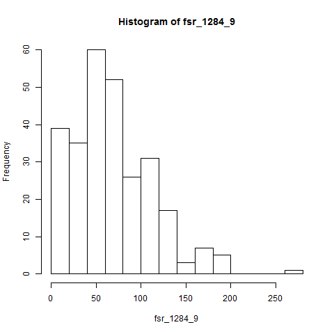

FsLab Walkthrough (with R)
This file is a sample experiment that demonstrates the capabilities of FsLab
journal. FsLab experiments automatically includes a reference to the FsLab
NuGet package, so you can use all the great data science F# packages.
The template also contains a runner that formats your script files nicely using
F# Formatting and generates nice HTML or LaTeX reports. To write your
experiments, you can include Markdown-formatted text in comments starting with
** such as this one. The report is generated and opened automatically when
you hit F5.
When you generate a report, the code in all scripts in the solution is executed, the resulting charts and tables are embedded and everything is nicely formatted. The rest of this experiment shows the available libraries and how to format your experiments.
FsLab libraries
The FsLab package automatically references the following F# libraries:
- Deedle for working with data frames and data series
- F# R type provider for interoperating with R
- F# Charting for building interactive charts
- F# Data with data-access with F# type providers
- Math.NET Numerics for writing numerical calculations
Sample data access with F# Data
The following snippet builds a simple Deedle data frame using data obtained from the WorldBank type provider from the F# Data library:
1: 2: 3: 4: 5: 6: 7: 8: 9: 10: 11: 12: |
open Deedle open FSharp.Data // Get countries in the Euro area let wb = WorldBankData.GetDataContext() let countries = wb.Regions.``Euro area`` // Get a frame with debts as a percentage of GDP let debts = [ for c in countries.Countries -> let debts = c.Indicators.``Central government debt, total (% of GDP)`` c.Name => series debts ] |> frame |
The above snippet defines a debt value, which is a data frame with years as
the row index and country names as the column index. You can use the
include-value command to include a table summarizing the frame data:
Austria |
Belgium |
Cyprus |
... |
Portugal |
Slovak Republic |
Slovenia |
|
|---|---|---|---|---|---|---|---|
1994 |
N/A |
N/A |
N/A |
... |
N/A |
N/A |
N/A |
1995 |
61.31 |
122.7 |
N/A |
... |
N/A |
N/A |
16.58 |
1996 |
61.81 |
120.1 |
N/A |
... |
N/A |
N/A |
19.97 |
1997 |
59.18 |
117 |
N/A |
... |
62.07 |
N/A |
20.58 |
1998 |
61.39 |
112.8 |
261.7 |
... |
60.53 |
N/A |
21.12 |
1999 |
63.96 |
109.5 |
155.8 |
... |
58.07 |
N/A |
21.66 |
2000 |
64.13 |
104.5 |
156.3 |
... |
57.58 |
N/A |
N/A |
2001 |
64.22 |
103.1 |
160.9 |
... |
58.37 |
N/A |
N/A |
... |
... |
... |
... |
... |
... |
... |
... |
2009 |
68.99 |
87 |
97.57 |
... |
87.93 |
37.64 |
N/A |
2010 |
72.17 |
86.24 |
102.4 |
... |
91.42 |
45.55 |
N/A |
2011 |
73.12 |
88.57 |
113.6 |
... |
90.16 |
44.84 |
N/A |
2012 |
78.46 |
89.44 |
131 |
... |
122.8 |
53.48 |
N/A |
As you can see, you can even include simple F# expressions in the command. By default,
FsLab Journal uses the "G4" format string, but if you want to use other format string,
you can specify it in the Main.fs file when calling Journal.Process. You can also
embed LaTeX in your reports and write
(for more options see the documentation):
\[R = \frac{\mathit{round}(100 \times \mathit{debt})}{100}\]
Sample data analysis with Deedle
You can also use define-output to give a name to a code block. When the code
block is an expression that returns a value, you can use include-it to
include the formatted result:
1: 2: 3: 4: 5: 6: 7: 8: |
let recent = debts.Rows.[2005 ..] recent |> Stats.mean |> Series.sort |> Series.rev |> Series.take 4 |> round |
Keys |
Cyprus |
Greece |
Malta |
Italy |
|---|---|---|---|---|
Values |
130 |
127 |
119 |
111 |
Here, we calculate means of debts over years starting with 2005, take the 4 countries with the greatest average debt and round the debts.
Calculating with Math.NET
If you want to implement a more complex calculation, you can turn Deedle frame or series to Math.NET matrix or vector, respectively, and use the linear algebra features of Math.NET. For example:
1: 2: 3: 4: 5: 6: 7: 8: |
open MathNet.Numerics.LinearAlgebra // Create matrix from debts & vector from means let debtsMat = debts |> Frame.fillMissingWith 0.0 |> Frame.toMatrix let avgVect = debts |> Stats.mean |> Series.toVector // Multiply debts per year by means debtsMat * avgVect |
FsLab Journal also supports embedding of matrices and vectors. Here, you can see how the matrix with debts (filled with zeros for missing values) is formatted as a matrix. Then, the code shows how to use a simple matrix multiplication using Math.NET.
Embedding sample F# Charting charts
The generated report chan also automatically embed charts created using the F# Charting library. Here, we plot the debts of the 3 countries with the largest debt based on the previous table:
1: 2: 3: 4: 5: 6: 7: 8: |
open FSharp.Charting // Combine three line charts and add a legend Chart.Combine( [ Chart.Line(recent?Cyprus, Name="Cyprus") Chart.Line(recent?Malta, Name="Malta") Chart.Line(recent?Greece, Name="Greece") ]) .WithLegend() |

Interoperating with R
If you have R installed, you can use the R type provider in FsLab
experiments. The FsLab runner captures drawing done on R graphical device
automatically and so you can also embed charts using the include-output command.
The R type provider looks at packages available in your R installation and makes
them available as namespaces under RProvider. The following example imports a
couple of packages and then draws a histogram from all debts in the entire data set:
1: 2: 3: 4: 5: 6: |
open RProvider open RProvider.graphics open RProvider.stats open RProvider.``base`` R.hist(debts.GetAllValues<float>()) |

R can be useful for drawing charts, but also for accessing a wide range of statistical functions that are not available in other F# libraries. For example, we can calculate correlation between the different countries based on debts. We do this only for recent years and we first drop columns that contain missing values:
1: 2: |
let rdf = R.as_data_frame(R.cor(recent.DropSparseColumns())) let cors = rdf.GetValue<Frame<string, string>>() |
The cor function returns a matrix and we first convert it (in R) to data frame using
as_data_frame. Then we convert the R data frame into Deedle frame using the
GetValue function, which takes a type parameter specifying the required type on the
F# side.
Now, we can use stack function to get a frame containing row keys, column keys and
values. This gives us a list of pairs of countries and their correlation. We get only
pairs where the first country is before the second (alphabetically) to remove self-correlations
and dupliactes. Then we sort the countries and take the 5 most correlated:
1: 2: 3: 4: 5: 6: |
cors |> Frame.stack |> Frame.filterRowValues (fun row -> row.GetAs<string>("Row") < row.GetAs<string>("Column") ) |> Frame.sortRowsBy "Value" ((*) -1.0) |> Frame.take 5 |
Row |
Column |
Value |
|
|---|---|---|---|
121 |
France |
Ireland |
0.9909 |
116 |
France |
Spain |
0.9858 |
7 |
Austria |
France |
0.9852 |
4 |
Austria |
Spain |
0.9788 |
13 |
Austria |
Netherlands |
0.9777 |
More about the FsLab journal runner
When you hit F5 in Visual Studio, the FsLab runner automatically processes all
*.fsx and *.md files in the root directory of your project. The generated files
are placed in the output folder (together with all the styles and JavaScript files
that it requires). Then, the runner opens your default web browser with the generated
file.
If you have multiple files, the runner automatically generates index file with
links to all your notebooks and opens this instead. You can also create your
own index file by adding a file named Index.fsx or Index.md (if you only
want to write Markdown text in your index).
Command line
The runner can be also invoked from command line - the template includes a simple FAKE build script that is copied to the root directory of your project (if you modify this, it will be overwritten). The build script supports the following commands:
build htmlGenerate HTML output for all scripts and store the results inoutputfolderbuild latexGenerate LaTeX output for all scripts and store the results inoutputfolderbuild pdfGenerate LaTeX output as when usingbuild latexand then runpdflatexon the files (this only works when you havepdflatexaccessible inPATH
Full name: FsLab Tutorial1.wb
static member GetDataContext : unit -> WorldBankDataService
nested type ServiceTypes
Full name: FSharp.Data.WorldBankData
<summary>Typed representation of WorldBank data. See http://www.worldbank.org for terms and conditions.</summary>
Full name: FsLab Tutorial1.countries
Full name: FsLab Tutorial1.debts
<summary>The indicators for the region</summary>
<summary>The indicators for the country</summary>
Full name: Deedle.FSharpSeriesExtensions.series
Full name: Deedle.FSharpFrameExtensions.frame
Full name: FsLab Tutorial1.recent
static member count : frame:Frame<'R,'C> -> Series<'C,int> (requires equality and equality)
static member count : series:Series<'K,'V> -> int (requires equality)
static member expandingCount : series:Series<'K,float> -> Series<'K,float> (requires equality)
static member expandingKurt : series:Series<'K,float> -> Series<'K,float> (requires equality)
static member expandingMax : series:Series<'K,float> -> Series<'K,float> (requires equality)
static member expandingMean : series:Series<'K,float> -> Series<'K,float> (requires equality)
static member expandingMin : series:Series<'K,float> -> Series<'K,float> (requires equality)
static member expandingSkew : series:Series<'K,float> -> Series<'K,float> (requires equality)
static member expandingStdDev : series:Series<'K,float> -> Series<'K,float> (requires equality)
static member expandingSum : series:Series<'K,float> -> Series<'K,float> (requires equality)
...
Full name: Deedle.Stats
static member Stats.mean : series:Series<'K,float> -> float (requires equality)
module Series
from Deedle
--------------------
type Series =
static member ofNullables : values:seq<Nullable<'a0>> -> Series<int,'a0> (requires default constructor and value type and 'a0 :> ValueType)
static member ofObservations : observations:seq<'a0 * 'a1> -> Series<'a0,'a1> (requires equality)
static member ofOptionalObservations : observations:seq<'K * 'a1 option> -> Series<'K,'a1> (requires equality)
static member ofValues : values:seq<'a0> -> Series<int,'a0>
Full name: Deedle.FSharpSeriesExtensions.Series
--------------------
type Series<'K,'V (requires equality)> =
interface IFsiFormattable
interface ISeries<'K>
new : pairs:seq<KeyValuePair<'K,'V>> -> Series<'K,'V>
new : keys:'K [] * values:'V [] -> Series<'K,'V>
new : keys:seq<'K> * values:seq<'V> -> Series<'K,'V>
new : index:IIndex<'K> * vector:IVector<'V> * vectorBuilder:IVectorBuilder * indexBuilder:IIndexBuilder -> Series<'K,'V>
member After : lowerExclusive:'K -> Series<'K,'V>
member Aggregate : aggregation:Aggregation<'K> * observationSelector:Func<DataSegment<Series<'K,'V>>,KeyValuePair<'TNewKey,OptionalValue<'R>>> -> Series<'TNewKey,'R> (requires equality)
member Aggregate : aggregation:Aggregation<'K> * keySelector:Func<DataSegment<Series<'K,'V>>,'TNewKey> * valueSelector:Func<DataSegment<Series<'K,'V>>,OptionalValue<'R>> -> Series<'TNewKey,'R> (requires equality)
member AsyncMaterialize : unit -> Async<Series<'K,'V>>
...
Full name: Deedle.Series<_,_>
--------------------
new : pairs:seq<System.Collections.Generic.KeyValuePair<'K,'V>> -> Series<'K,'V>
new : keys:seq<'K> * values:seq<'V> -> Series<'K,'V>
new : keys:'K [] * values:'V [] -> Series<'K,'V>
new : index:Indices.IIndex<'K> * vector:IVector<'V> * vectorBuilder:Vectors.IVectorBuilder * indexBuilder:Indices.IIndexBuilder -> Series<'K,'V>
Full name: Deedle.Series.sort
Full name: Deedle.Series.rev
Full name: Deedle.Series.take
Full name: Microsoft.FSharp.Core.Operators.round
Full name: FsLab Tutorial1.debtsMat
module Frame
from Deedle
--------------------
type Frame =
static member CreateEmpty : unit -> Frame<'R,'C> (requires equality and equality)
static member FromArray2D : array:'T [,] -> Frame<int,int>
static member FromColumns : cols:Series<'TColKey,Series<'TRowKey,'V>> -> Frame<'TRowKey,'TColKey> (requires equality and equality)
static member FromColumns : cols:Series<'TColKey,ObjectSeries<'TRowKey>> -> Frame<'TRowKey,'TColKey> (requires equality and equality)
static member FromColumns : columns:seq<KeyValuePair<'ColKey,ObjectSeries<'RowKey>>> -> Frame<'RowKey,'ColKey> (requires equality and equality)
static member FromColumns : columns:seq<KeyValuePair<'ColKey,Series<'RowKey,'V>>> -> Frame<'RowKey,'ColKey> (requires equality and equality)
static member FromColumns : cols:seq<Series<'ColKey,'V>> -> Frame<'ColKey,int> (requires equality)
static member FromRecords : values:seq<'T> -> Frame<int,string>
static member FromRecords : series:Series<'K,'R> -> Frame<'K,string> (requires equality)
static member FromRowKeys : keys:seq<'K> -> Frame<'K,string> (requires equality)
...
Full name: Deedle.Frame
--------------------
type Frame<'TRowKey,'TColumnKey (requires equality and equality)> =
interface IDynamicMetaObjectProvider
interface INotifyCollectionChanged
interface IFsiFormattable
interface IFrame
new : names:seq<'TColumnKey> * columns:seq<ISeries<'TRowKey>> -> Frame<'TRowKey,'TColumnKey>
new : rowIndex:IIndex<'TRowKey> * columnIndex:IIndex<'TColumnKey> * data:IVector<IVector> * indexBuilder:IIndexBuilder * vectorBuilder:IVectorBuilder -> Frame<'TRowKey,'TColumnKey>
member AddColumn : column:'TColumnKey * series:ISeries<'TRowKey> -> unit
member AddColumn : column:'TColumnKey * series:seq<'V> -> unit
member AddColumn : column:'TColumnKey * series:ISeries<'TRowKey> * lookup:Lookup -> unit
member AddColumn : column:'TColumnKey * series:seq<'V> * lookup:Lookup -> unit
...
Full name: Deedle.Frame<_,_>
--------------------
new : names:seq<'TColumnKey> * columns:seq<ISeries<'TRowKey>> -> Frame<'TRowKey,'TColumnKey>
new : rowIndex:Indices.IIndex<'TRowKey> * columnIndex:Indices.IIndex<'TColumnKey> * data:IVector<IVector> * indexBuilder:Indices.IIndexBuilder * vectorBuilder:Vectors.IVectorBuilder -> Frame<'TRowKey,'TColumnKey>
Full name: Deedle.Frame.fillMissingWith
Full name: Deedle.Frame.toMatrix
Full name: FsLab Tutorial1.avgVect
Full name: Deedle.Series.toVector
static member Area : data:seq<#value> * ?Name:string * ?Title:string * ?Labels:#seq<string> * ?Color:Color * ?XTitle:string * ?YTitle:string -> GenericChart
static member Area : data:seq<#key * #value> * ?Name:string * ?Title:string * ?Labels:#seq<string> * ?Color:Color * ?XTitle:string * ?YTitle:string -> GenericChart
static member Bar : data:seq<#value> * ?Name:string * ?Title:string * ?Labels:#seq<string> * ?Color:Color * ?XTitle:string * ?YTitle:string -> GenericChart
static member Bar : data:seq<#key * #value> * ?Name:string * ?Title:string * ?Labels:#seq<string> * ?Color:Color * ?XTitle:string * ?YTitle:string -> GenericChart
static member BoxPlotFromData : data:seq<#key * #seq<'a2>> * ?Name:string * ?Title:string * ?Color:Color * ?XTitle:string * ?YTitle:string * ?Percentile:int * ?ShowAverage:bool * ?ShowMedian:bool * ?ShowUnusualValues:bool * ?WhiskerPercentile:int -> GenericChart (requires 'a2 :> value)
static member BoxPlotFromStatistics : data:seq<#key * #value * #value * #value * #value * #value * #value> * ?Name:string * ?Title:string * ?Labels:#seq<string> * ?Color:Color * ?XTitle:string * ?YTitle:string * ?Percentile:int * ?ShowAverage:bool * ?ShowMedian:bool * ?ShowUnusualValues:bool * ?WhiskerPercentile:int -> GenericChart
static member Bubble : data:seq<#value * #value> * ?Name:string * ?Title:string * ?Labels:#seq<string> * ?Color:Color * ?XTitle:string * ?YTitle:string * ?BubbleMaxSize:int * ?BubbleMinSize:int * ?BubbleScaleMax:float * ?BubbleScaleMin:float * ?UseSizeForLabel:bool -> GenericChart
static member Bubble : data:seq<#key * #value * #value> * ?Name:string * ?Title:string * ?Labels:#seq<string> * ?Color:Color * ?XTitle:string * ?YTitle:string * ?BubbleMaxSize:int * ?BubbleMinSize:int * ?BubbleScaleMax:float * ?BubbleScaleMin:float * ?UseSizeForLabel:bool -> GenericChart
static member Candlestick : data:seq<#value * #value * #value * #value> * ?Name:string * ?Title:string * ?Labels:#seq<string> * ?Color:Color * ?XTitle:string * ?YTitle:string -> CandlestickChart
static member Candlestick : data:seq<#key * #value * #value * #value * #value> * ?Name:string * ?Title:string * ?Labels:#seq<string> * ?Color:Color * ?XTitle:string * ?YTitle:string -> CandlestickChart
...
Full name: FSharp.Charting.Chart
static member Chart.Line : data:seq<#value> * ?Name:string * ?Title:string * ?Labels:#seq<string> * ?Color:System.Drawing.Color * ?XTitle:string * ?YTitle:string -> ChartTypes.GenericChart
static member Chart.Line : data:seq<#key * #value> * ?Name:string * ?Title:string * ?Labels:#seq<string> * ?Color:System.Drawing.Color * ?XTitle:string * ?YTitle:string -> ChartTypes.GenericChart
static member Axis : ?x: obj * ?at: obj * ?___: obj * ?side: obj * ?labels: obj * ?paramArray: obj [] -> SymbolicExpression + 1 overload
static member abline : ?a: obj * ?b: obj * ?h: obj * ?v: obj * ?reg: obj * ?coef: obj * ?untf: obj * ?___: obj * ?paramArray: obj [] -> SymbolicExpression + 1 overload
static member arrows : ?x0: obj * ?y0: obj * ?x1: obj * ?y1: obj * ?length: obj * ?angle: obj * ?code: obj * ?col: obj * ?lty: obj * ?lwd: obj * ?___: obj * ?paramArray: obj [] -> SymbolicExpression + 1 overload
static member assocplot : ?x: obj * ?col: obj * ?space: obj * ?main: obj * ?xlab: obj * ?ylab: obj -> SymbolicExpression + 1 overload
static member axTicks : ?side: obj * ?axp: obj * ?usr: obj * ?log: obj * ?nintLog: obj -> SymbolicExpression + 1 overload
static member axis : ?side: obj * ?at: obj * ?labels: obj * ?tick: obj * ?line: obj * ?pos: obj * ?outer: obj * ?font: obj * ?lty: obj * ?lwd: obj * ?lwd_ticks: obj * ?col: obj * ?col_ticks: obj * ?hadj: obj * ?padj: obj * ?___: obj * ?paramArray: obj [] -> SymbolicExpression + 1 overload
static member axis_Date : ?side: obj * ?x: obj * ?at: obj * ?format: obj * ?labels: obj * ?___: obj * ?paramArray: obj [] -> SymbolicExpression + 1 overload
static member axis_POSIXct : ?side: obj * ?x: obj * ?at: obj * ?format: obj * ?labels: obj * ?___: obj * ?paramArray: obj [] -> SymbolicExpression + 1 overload
static member barplot : ?height: obj * ?___: obj * ?paramArray: obj [] -> SymbolicExpression + 1 overload
static member barplot_default : ?height: obj * ?width: obj * ?space: obj * ?names_arg: obj * ?legend_text: obj * ?beside: obj * ?horiz: obj * ?density: obj * ?angle: obj * ?col: obj * ?border: obj * ?main: obj * ?sub: obj * ?xlab: obj * ?ylab: obj * ?xlim: obj * ?ylim: obj * ?xpd: obj * ?log: obj * ?axes: obj * ?axisnames: obj * ?cex_axis: obj * ?cex_names: obj * ?inside: obj * ?plot: obj * ?axis_lty: obj * ?offset: obj * ?add: obj * ?args_legend: obj * ?___: obj * ?paramArray: obj [] -> SymbolicExpression + 1 overload
...
Full name: RProvider.graphics.R
R functions for base graphics
R.hist(?x: obj, ?___: obj, ?paramArray: obj []) : RDotNet.SymbolicExpression
Histograms
member Frame.GetAllValues : strict:ConversionKind -> seq<'R>
val float : value:'T -> float (requires member op_Explicit)
Full name: Microsoft.FSharp.Core.Operators.float
--------------------
type float = System.Double
Full name: Microsoft.FSharp.Core.float
--------------------
type float<'Measure> = float
Full name: Microsoft.FSharp.Core.float<_>
Full name: FsLab Tutorial1.rdf
static member ! : ?paramArray: obj [] -> SymbolicExpression + 1 overload
static member != : ?paramArray: obj [] -> SymbolicExpression + 1 overload
static member !_hexmode : ?a: obj -> SymbolicExpression + 1 overload
static member !_octmode : ?a: obj -> SymbolicExpression + 1 overload
static member $ : ?paramArray: obj [] -> SymbolicExpression + 1 overload
static member $<- : ?paramArray: obj [] -> SymbolicExpression + 1 overload
static member $<-_data_frame : ?x: obj * ?name: obj * ?value: obj -> SymbolicExpression + 1 overload
static member $_DLLInfo : ?x: obj * ?name: obj -> SymbolicExpression + 1 overload
static member $_data_frame : ?x: obj * ?name: obj -> SymbolicExpression + 1 overload
static member $_package__version : ?x: obj * ?name: obj -> SymbolicExpression + 1 overload
...
Full name: RProvider.base.R
Base R functions
R.as_data_frame(paramsByName: System.Collections.Generic.IDictionary<string,obj>) : RDotNet.SymbolicExpression
R.as_data_frame(?x: obj, ?row_names: obj, ?optional: obj, ?___: obj, ?paramArray: obj []) : RDotNet.SymbolicExpression
Coerce to a Data Frame
--------------------
R.as_data_frame(paramsByName: System.Collections.Generic.IDictionary<string,obj>) : RDotNet.SymbolicExpression
R.as_data_frame(?x: obj, ?row_names: obj, ?optional: obj, ?___: obj, ?paramArray: obj []) : RDotNet.SymbolicExpression
Coerce to a Data Frame
static member AIC : ?object: obj * ?___: obj * ?k: obj * ?paramArray: obj [] -> SymbolicExpression + 1 overload
static member ARMAacf : ?ar: obj * ?ma: obj * ?lag_max: obj * ?pacf: obj -> SymbolicExpression + 1 overload
static member ARMAtoMA : ?ar: obj * ?ma: obj * ?lag_max: obj -> SymbolicExpression + 1 overload
static member BIC : ?object: obj * ?___: obj * ?paramArray: obj [] -> SymbolicExpression + 1 overload
static member Box_test : ?x: obj * ?lag: obj * ?type: obj * ?fitdf: obj -> SymbolicExpression + 1 overload
static member C : ?object: obj * ?contr: obj * ?how_many: obj * ?___: obj * ?paramArray: obj [] -> SymbolicExpression + 1 overload
static member D : ?expr: obj * ?name: obj -> SymbolicExpression + 1 overload
static member Gamma : ?link: obj -> SymbolicExpression + 1 overload
static member HoltWinters : ?x: obj * ?alpha: obj * ?beta: obj * ?gamma: obj * ?seasonal: obj * ?start_periods: obj * ?l_start: obj * ?b_start: obj * ?s_start: obj * ?optim_start: obj * ?optim_control: obj -> SymbolicExpression + 1 overload
static member IQR : ?x: obj * ?na_rm: obj * ?type: obj -> SymbolicExpression + 1 overload
...
Full name: RProvider.stats.R
R statistical functions
R.cor(?x: obj, ?y: obj, ?use: obj, ?method: obj) : RDotNet.SymbolicExpression
Correlation, Variance and Covariance (Matrices)
Full name: FsLab Tutorial1.cors
val string : value:'T -> string
Full name: Microsoft.FSharp.Core.Operators.string
--------------------
type string = System.String
Full name: Microsoft.FSharp.Core.string
Full name: Deedle.Frame.stack
Full name: Deedle.Frame.filterRowValues
member ObjectSeries.GetAs : column:'K * fallback:'R -> 'R
Full name: Deedle.Frame.sortRowsBy
Full name: Deedle.Frame.take